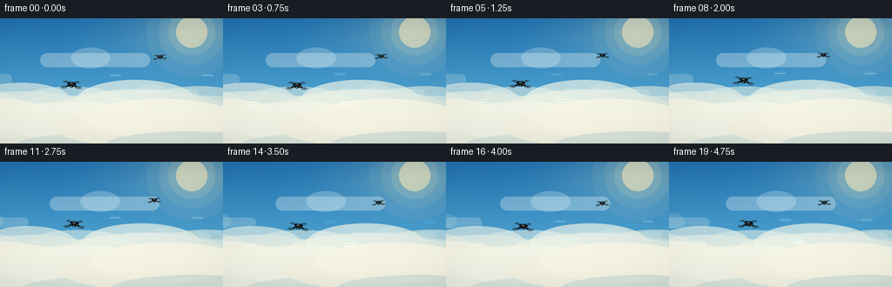
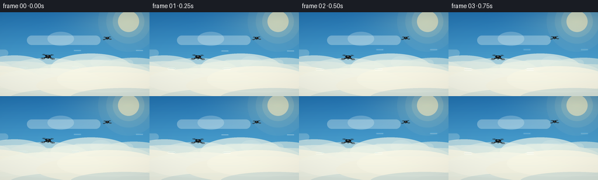
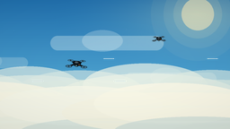

CODING AGENTS AS PIXEL WORLD MODELS
traex/DeepSeek-V4.1-Flash · instance_preservation_0042
点击播放 · 原生 RGB 像素
逐轮保存的候选
回放视频、检查图与代码变化。
每份候选均可单独播放。实际图片检查记录在下方工具轨迹中。
候选 01播放与检查图
点击播放 · 原生 RGB 像素


展开代码变化
--- 上一保存版本
+++ 本次保存版本
@@ -0,0 +1,361 @@
+from __future__ import annotations
+
+import math
+from pathlib import Path
+
+import numpy as np
+from PIL import Image, ImageDraw, ImageFilter
+
+from artifact_io import save
+
+
+WIDTH = 256
+HEIGHT = 144
+FRAMES = 20
+FPS = 4
+SCALE = 4
+
+
+def lerp(a, b, t):
+ return a + (b - a) * t
+
+
+def make_background(frame_index: int) -> Image.Image:
+ """Build a bright, high-altitude sky with a soft cloud deck."""
+ width = WIDTH * SCALE
+ height = HEIGHT * SCALE
+ y = np.linspace(0.0, 1.0, height, dtype=np.float32)[:, None]
+ x = np.linspace(0.0, 1.0, width, dtype=np.float32)[None, :]
+
+ top = np.array([35, 116, 179], dtype=np.float32)
+ middle = np.array([91, 177, 217], dtype=np.float32)
+ bottom = np.array([218, 225, 203], dtype=np.float32)
+ t = np.clip(y / 0.82, 0.0, 1.0)
+ lower_t = np.clip((y - 0.68) / 0.32, 0.0, 1.0)
+ rgb = top[None, None, :] * (1.0 - t[..., None])
+ rgb += middle[None, None, :] * t[..., None]
+ rgb = rgb * (1.0 - lower_t[..., None]) + bottom[None, None, :] * lower_t[..., None]
+
+ # A warm sun glow keeps the sky from becoming a single blue field.
+ sx, sy = 0.86, 0.11
+ distance = np.sqrt(((x - sx) * 0.73) ** 2 + (y - sy) ** 2)
+ glow = np.clip(1.0 - distance / 0.48, 0.0, 1.0) ** 2.1
+ rgb = rgb + glow[..., None] * np.array([66, 44, 9], dtype=np.float32)
+
+ # Fine ordered texture avoids visible gradient banding at this small size.
+ yy, xx = np.mgrid[0:height, 0:width]
+ dither = ((xx * 13 + yy * 7 + (xx ^ yy) * 3) & 7).astype(np.float32) - 3.5
+ rgb += dither[..., None] * 0.55
+ sky = Image.fromarray(np.uint8(np.clip(rgb, 0, 255)), "RGB")
+ draw = ImageDraw.Draw(sky, "RGBA")
+
+ # Sun disc and restrained halo.
+ sun_x, sun_y = int(0.86 * width), int(0.11 * height)
+ for radius, alpha in [(52, 12), (38, 18), (27, 30), (18, 145)]:
+ draw.ellipse(
+ (sun_x - radius * SCALE, sun_y - radius * SCALE,
+ sun_x + radius * SCALE, sun_y + radius * SCALE),
+ fill=(255, 239, 190, alpha),
+ )
+
+ # Distant high cloud streaks.
+ drift = frame_index * 1.7 * SCALE
+ clouds = [
+ (-60, 32, 118, 9, 72, (238, 250, 250, 72)),
+ (172, 48, 126, 8, 95, (242, 251, 247, 80)),
+ (14, 70, 80, 6, 160, (248, 252, 244, 52)),
+ (228, 88, 102, 7, 120, (248, 252, 243, 62)),
+ ]
+ for base_x, cy, length, thickness, speed, color in clouds:
+ cx = (base_x * SCALE + drift * speed / 160.0) % (width + length * SCALE * 2)
+ cx -= length * SCALE
+ cy *= SCALE
+ draw.rounded_rectangle(
+ (cx, cy - thickness * SCALE, cx + length * SCALE, cy + thickness * SCALE),
+ radius=thickness * SCALE,
+ fill=color,
+ )
+ draw.ellipse(
+ (cx + length * 0.28 * SCALE, cy - thickness * 1.8 * SCALE,
+ cx + length * 0.64 * SCALE, cy + thickness * 1.2 * SCALE),
+ fill=(color[0], color[1], color[2], max(18, color[3] - 18)),
+ )
+
+ # Layered cloud deck below the drones.
+ cloud_shift = int(round(frame_index * 1.25 * SCALE))
+ puffs = [
+ (-34, 111, 93, 21, (213, 229, 223, 155)),
+ (28, 106, 84, 22, (230, 239, 228, 165)),
+ (85, 112, 104, 23, (218, 232, 224, 150)),
+ (160, 107, 102, 25, (234, 241, 228, 175)),
+ (233, 113, 96, 24, (220, 233, 223, 160)),
+ (-18, 126, 137, 24, (245, 244, 226, 205)),
+ (89, 128, 134, 22, (242, 244, 229, 210)),
+ (190, 126, 128, 23, (246, 245, 227, 220)),
+ ]
+ for index, (cx, cy, rx, ry, color) in enumerate(puffs):
+ shift = cloud_shift * (0.45 + 0.1 * (index % 3))
+ bx = cx * SCALE + shift
+ by = cy * SCALE
+ draw.ellipse(
+ (bx - rx * SCALE, by - ry * SCALE, bx + rx * SCALE, by + ry * SCALE),
+ fill=color,
+ )
+ draw.ellipse(
+ (bx - rx * 0.72 * SCALE, by - ry * 1.45 * SCALE,
+ bx + rx * 0.64 * SCALE, by + ry * 0.55 * SCALE),
+ fill=(color[0] + 4, color[1] + 3, color[2] + 4, color[3]),
+ )
+ draw.ellipse(
+ (bx - rx * 0.55 * SCALE, by + ry * 0.18 * SCALE,
+ bx + rx * 0.92 * SCALE, by + ry * 1.65 * SCALE),
+ fill=(198, 218, 215, max(80, color[3] - 70)),
+ )
+
+ # Thin atmospheric bands at the cloud edges.
+ for cy, alpha in [(101, 38), (118, 28), (135, 35)]:
+ band_shift = int(frame_index * 0.55 * SCALE)
+ draw.rectangle(
+ (-20 + band_shift, cy * SCALE, width + 20, cy * SCALE + 2 * SCALE),
+ fill=(235, 246, 239, alpha),
+ )
+
+ return sky
+
+
+def rotor_layer(draw: ImageDraw.ImageDraw, cx: float, cy: float, radius: float,
+ angle: float, scale: float, front: bool) -> None:
+ """Draw a quadcopter rotor with a readable ring and animated blades."""
+ ring_alpha = 225 if front else 165
+ outer = (14, 20, 24, ring_alpha)
+ inner = (44, 55, 62, min(235, ring_alpha + 15))
+ rx = radius * scale
+ ry = radius * 0.36 * scale
+
+ # Soft shadow under the disc.
+ draw.ellipse(
+ (cx - rx * 1.04, cy - ry * 1.08, cx + rx * 1.04, cy + ry * 1.20),
+ fill=(3, 9, 13, 38 if front else 24),
+ )
+ draw.ellipse((cx - rx, cy - ry, cx + rx, cy + ry), outline=outer,
+ width=max(2, int(2.2 * scale)))
+ draw.arc(
+ (cx - rx * 0.96, cy - ry * 0.96, cx + rx * 0.96, cy + ry * 0.96),
+ 202, 337, fill=inner, width=max(1, int(1.3 * scale)),
+ )
+ draw.arc(
+ (cx - rx * 0.94, cy - ry * 0.94, cx + rx * 0.94, cy + ry * 0.94),
+ 22, 149, fill=(101, 116, 121, 130 if front else 95),
+ width=max(1, int(1.1 * scale)),
+ )
+
+ # Four blurred blade positions; the angle changes every frame.
+ for blade in range(4):
+ a = angle + blade * math.pi / 2
+ ex = math.cos(a) * rx * 0.87
+ ey = math.sin(a) * ry * 0.70
+ draw.line(
+ (cx - ex, cy - ey, cx + ex, cy + ey),
+ fill=(47, 58, 65, 128 if front else 84),
+ width=max(2, int(2.5 * scale)),
+ )
+ draw.line(
+ (cx - ex * 0.72, cy - ey * 0.72, cx + ex * 0.72, cy + ey * 0.72),
+ fill=(111, 126, 131, 96 if front else 64),
+ width=max(1, int(1.2 * scale)),
+ )
+
+ # Hub and a small glint.
+ draw.ellipse(
+ (cx - 3.4 * scale, cy - 2.0 * scale, cx + 3.4 * scale, cy + 2.0 * scale),
+ fill=(8, 13, 17, 255),
+ )
+ draw.ellipse(
+ (cx - 1.4 * scale, cy - 1.1 * scale, cx + 1.2 * scale, cy + 0.8 * scale),
+ fill=(84, 98, 104, 210),
+ )
+
+
+def make_drone(scale: float, angle: float, phase: float) -> Image.Image:
+ """Render one black quadcopter in a three-quarter view."""
+ layer_w = int(124 * scale)
+ layer_h = int(91 * scale)
+ layer = Image.new("RGBA", (layer_w, layer_h), (0, 0, 0, 0))
+ d = ImageDraw.Draw(layer, "RGBA")
+ cx, cy = layer_w / 2, layer_h / 2 + 2 * scale
+
+ rotors = [
+ (-27.0, -11.0, 12.2, False),
+ (27.0, -11.0, 12.2, False),
+ (-34.0, 15.0, 13.2, True),
+ (34.0, 15.0, 13.2, True),
+ ]
+
+ # Arms sit behind the rotors.
+ arm_pairs = [
+ ((-7.0, 1.0), (-27.0, -11.0), 6.2),
+ ((7.0, 1.0), (27.0, -11.0), 6.2),
+ ((-7.0, 4.0), (-34.0, 15.0), 7.0),
+ ((7.0, 4.0), (34.0, 15.0), 7.0),
+ ]
+ for (x1, y1), (x2, y2), thickness in arm_pairs:
+ p1 = (cx + x1 * scale, cy + y1 * scale)
+ p2 = (cx + x2 * scale, cy + y2 * scale)
+ d.line((p1, p2), fill=(6, 11, 15, 255),
+ width=int(thickness * scale))
+ d.line((p1[0], p1[1] - 1.5 * scale, p2[0], p2[1] - 1.5 * scale),
+ fill=(50, 62, 69, 255), width=max(1, int(1.15 * scale)))
+
+ # Rear rotors first.
+ for rx, ry, radius, front in rotors:
+ rotor_layer(d, cx + rx * scale, cy + ry * scale, radius, angle + phase,
+ scale, front)
+
+ # Main fuselage: layered faceted shapes rather than a flat silhouette.
+ body = [
+ (cx - 18 * scale, cy - 3 * scale),
+ (cx - 12 * scale, cy - 11 * scale),
+ (cx + 11 * scale, cy - 10 * scale),
+ (cx + 20 * scale, cy - 2 * scale),
+ (cx + 13 * scale, cy + 11 * scale),
+ (cx - 9 * scale, cy + 12 * scale),
+ ]
+ d.polygon(body, fill=(5, 9, 13, 255))
+ d.polygon(
+ [
+ (cx - 14 * scale, cy - 3 * scale),
+ (cx - 9 * scale, cy - 8 * scale),
+ (cx + 9 * scale, cy - 7 * scale),
+ (cx + 14 * scale, cy - 1 * scale),
+ (cx + 8 * scale, cy + 7 * scale),
+ (cx - 7 * scale, cy + 8 * scale),
+ ],
+ fill=(18, 26, 32, 255),
+ )
+ d.polygon(
+ [
+ (cx - 10 * scale, cy - 5 * scale),
+ (cx - 5 * scale, cy - 8 * scale),
+ (cx + 9 * scale, cy - 6 * scale),
+ (cx + 5 * scale, cy - 1 * scale),
+ (cx - 5 * scale, cy + 1 * scale),
+ ],
+ fill=(45, 58, 66, 255),
+ )
+ d.ellipse(
+ (cx - 7 * scale, cy - 7.5 * scale, cx + 5 * scale, cy - 0.8 * scale),
+ fill=(77, 92, 99, 255),
+ )
+ d.arc(
+ (cx - 7 * scale, cy - 7.5 * scale, cx + 5 * scale, cy - 0.8 * scale),
+ 192, 331, fill=(160, 174, 174, 210), width=max(1, int(1.25 * scale)),
+ )
+
+ # Front camera gimbal and lens.
+ d.rounded_rectangle(
+ (cx - 6.3 * scale, cy + 6.0 * scale, cx + 5.6 * scale, cy + 15.0 * scale),
+ radius=3.2 * scale, fill=(5, 9, 12, 255),
+ )
+ d.ellipse(
+ (cx - 4.2 * scale, cy + 8.3 * scale, cx + 3.4 * scale, cy + 14.0 * scale),
+ fill=(19, 31, 38, 255), outline=(74, 88, 94, 255),
+ width=max(1, int(1.0 * scale)),
+ )
+ d.ellipse(
+ (cx - 2.3 * scale, cy + 9.7 * scale, cx + 1.5 * scale, cy + 12.8 * scale),
+ fill=(94, 228, 243, 255),
+ )
+ d.ellipse(
+ (cx - 1.7 * scale, cy + 10.2 * scale, cx + 0.0 * scale, cy + 11.3 * scale),
+ fill=(229, 254, 251, 255),
+ )
+
+ # Small status lights and edge glints.
+ pulse = 0.5 + 0.5 * math.sin(phase * 2.0)
+ d.ellipse(
+ (cx + 10 * scale, cy + 3.8 * scale, cx + 13 * scale, cy + 6.8 * scale),
+ fill=(255, int(116 + 55 * pulse), 55, 255),
+ )
+ d.line(
+ (cx - 17 * scale, cy + 1 * scale, cx - 10 * scale, cy + 7 * scale),
+ fill=(91, 105, 110, 180), width=max(1, int(1.1 * scale)),
+ )
+ return layer
+
+
+def paste_drone(frame: Image.Image, drone: Image.Image, cx: float, cy: float,
+ roll_deg: float) -> None:
+ rotated = drone.rotate(roll_deg, resample=Image.Resampling.BICUBIC,
+ expand=True)
+ left = int(round(cx * SCALE - rotated.width / 2))
+ top = int(round(cy * SCALE - rotated.height / 2))
+ frame.alpha_composite(rotated, (left, top))
+
+
+def add_air_motion(frame: Image.Image, frame_index: int,
+ drone_centers: list[tuple[float, float]]) -> None:
+ """Add a few restrained air streaks around the rotors."""
+ draw = ImageDraw.Draw(frame, "RGBA")
+ t = frame_index / FRAMES
+ for index, (cx, cy) in enumerate(drone_centers):
+ phase = (frame_index * (1.25 + index * 0.16) + index * 3.7) % 6.0
+ alpha = int(30 + 18 * math.sin(frame_index * 0.7 + index))
+ for side in (-1, 1):
+ x0 = cx + side * (45 + phase * 2.2)
+ y0 = cy + 20 + phase * 0.45
+ draw.line(
+ ((x0 - 4) * SCALE, y0 * SCALE,
+ (x0 + 8) * SCALE, y0 * SCALE),
+ fill=(228, 245, 243, max(10, alpha)),
+ width=1 * SCALE,
+ )
+
+
+def make_frame(frame_index: int) -> np.ndarray:
+ frame = make_background(frame_index).convert("RGBA")
+ t = frame_index / (FRAMES - 1)
+
+ # Independent hover paths: one broad arc and one gentler counter-beat.
+ main_x = 82.0 + 8.0 * t + 1.6 * math.sin(2.0 * math.pi * t * 1.15)
+ main_y = 74.5 - 4.0 * t + 2.5 * math.sin(2.0 * math.pi * t * 1.45 + 0.35)
+ second_x = 181.5 - 5.0 * t + 2.2 * math.sin(2.0 * math.pi * t * 1.10 + 1.6)
+ second_y = 42.0 + 4.0 * t + 2.0 * math.cos(2.0 * math.pi * t * 1.20)
+
+ main_angle = frame_index * 0.78 + 0.4
+ second_angle = frame_index * 0.96 + 1.5
+ main_drone = make_drone(1.0, main_angle, 0.0)
+ second_drone = make_drone(0.64, second_angle, 1.1)
+
+ # Slight banking follows the horizontal drift.
+ main_roll = -2.4 + 1.1 * math.sin(2.0 * math.pi * t * 1.1 + 0.3)
+ second_roll = 2.0 + 1.0 * math.cos(2.0 * math.pi * t * 1.2)
+ paste_drone(frame, second_drone, second_x, second_y, second_roll)
+ paste_drone(frame, main_drone, main_x, main_y, main_roll)
+ add_air_motion(frame, frame_index, [(main_x, main_y), (second_x, second_y)])
+
+ # Tiny foreground specks and a gentle vignette sell depth without clutter.
+ draw = ImageDraw.Draw(frame, "RGBA")
+ for i in range(7):
+ px = (13 + i * 41 + frame_index * (0.8 + i * 0.09)) % (WIDTH + 12) - 6
+ py = 14 + ((i * 29 + frame_index * 2) % 88)
+ draw.point((px * SCALE, py * SCALE), fill=(255, 252, 224, 125))
+
+ frame = frame.resize((WIDTH, HEIGHT), Image.Resampling.LANCZOS)
+ arr = np.asarray(frame.convert("RGB"), dtype=np.float32)
+ yy, xx = np.mgrid[0:HEIGHT, 0:WIDTH]
+ nx = (xx - WIDTH / 2) / (WIDTH / 2)
+ ny = (yy - HEIGHT / 2) / (HEIGHT / 2)
+ vignette = 1.0 - 0.075 * np.clip(nx * nx * 0.35 + ny * ny * 0.65, 0, 1)
+ arr *= vignette[..., None]
+ return np.uint8(np.clip(arr, 0, 255))
+
+
+def main() -> None:
+ case_dir = Path(__file__).resolve().parent
+ frames = np.stack([make_frame(i) for i in range(FRAMES)])
+ save(frames, case_dir)
+ print(f"wrote {FRAMES} frames at {WIDTH}x{HEIGHT} to {case_dir}")
+
+
+if __name__ == "__main__":
+ main()
可观测工具轨迹
实际执行的命令与返回图片。
命令 1exit 0
/bin/bash -c "pwd && rg --files -g 'prompt.txt' -g 'GENERATION_RULES.md' -g 'task_spec.json' -g '"'!*.mp4'"' -g '"'!*.webm'"'"
命令 2exit 0
/bin/bash -c "ls -la && find . -maxdepth 2 -type f -printf '%p %s bytes\\n' | sort | head -100"
命令 3exit 0
/bin/bash -c 'cat prompt.txt'
命令 4exit 0
/bin/bash -c 'cat GENERATION_RULES.md'
命令 5exit 0
/bin/bash -c 'cat task_spec.json'
命令 6exit 0
/bin/bash -c "sed -n '1,240p' artifact_io.py && sed -n '1,220p' player_template.html"
命令 7exit 0
/bin/bash -c "python - <<'PY'
import PIL, numpy
print('Pillow', PIL.__version__)
print('numpy', numpy.__version__)
PY"命令 8exit 0
/bin/bash -c 'command -v ffmpeg || true'
命令 9exit 1
/bin/bash -c 'python generate.py'
命令 10exit 0
/bin/bash -c 'python generate.py'
命令 11exit 0
/bin/bash -c "find . -maxdepth 2 -type f -printf '%p %s bytes\\n' | sort"
命令 12exit 0
/bin/bash -c "python - <<'PY'
from pathlib import Path
import json
import numpy as np
from PIL import Image
spec = json.loads(Path('task_spec.json').read_text())
frames = np.stack([np.asarray(Image.open(p).convert('RGB')) for p in sorted(Path('frames').glob('*.png'))])
pixels = np.load('pixels.npz')['pixels']
print('frames:', frames.shape, frames.dtype)
print('npz:', pixels.shape, pixels.dtype, 'range:', int(pixels.min()), int(pixels.max()))
print('mean luma:', round(float(frames.mean()), 2))
print('changed pixels frame-to-frame:', [int(np.any(frames[i] "'!= frames[i-1], axis=2).sum()) for i in range(1, len(frames))])
print('"'html bytes:', Path('index.html').stat().st_size)
assert frames.shape == (spec['frames'], spec['height'], spec['width'], 3)
assert pixels.shape == (spec['height'], spec['width'], spec['frames'])
assert Path('index.html').is_file() and Path('pixels.npz').is_file()
assert all(np.any(frames[i] "'!= frames[i-1]) for i in range(1, len(frames)))
print('"'validation: OK')
PY"视觉工具实际返回图片 1

视觉工具实际返回图片 2

视觉工具实际返回图片 3

保存候选 1 份；完成命令 12 次；可验证图片返回 3 张。原始 API 响应与完整日志保留在本地。